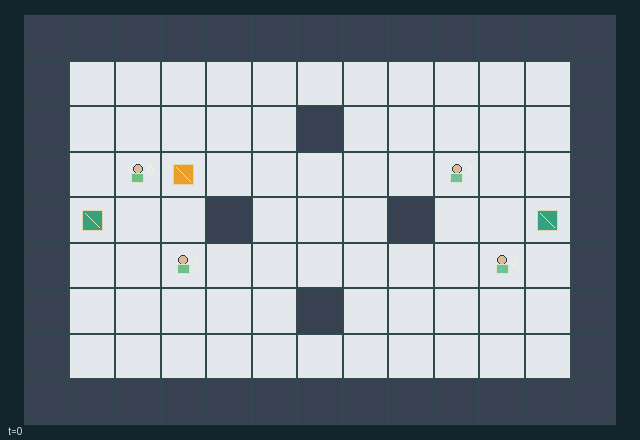

GI124 · Bankline — four-player ricochet possession arena

With a teammate, pass, shoot, block and intercept a shared ball to score three goals before the opponent.
Identity and original contract
4 independently actionable roles; 12 discrete commands per role; 169 native observation columns per role; original horizon 120 steps. Declared per-step reward range: -1 to 1. Observation regime: fully_observable.
Source SHA-256: be2e366123e40eb86d3b71476fa3807775d75ba255178d0e118891d2634041c9
The objective, rewards, population, map and horizon remain original. A preview is not a success claim.
Objective and gameplay
With a teammate, pass, shoot, block and intercept a shared ball to score three goals before the opponent.
A teammate changes passing direction, receiving opportunities and possession. Opponent tackles, ready blocks and occupied cells change feasible trajectories. A common ball and zero-sum team reward prevent independent collection-race behavior.
- Players 0/1 are team 0, attacking east. Players 2/3 are team 1, attacking west.
- Movement is simultaneous; occupied old cells and contested targets block entry, including swaps.
- Ready claim/tackle reaches Manhattan distance one. A ready blocking possessor is shielded.
- A pass aims by the signs of teammate displacement; shots choose a cardinal direction. Released flight has six ticks.
- Wall and obstacle collisions reflect the blocked velocity axes; corner collisions reflect both.
- A ready block within one cell of the post-wall ball reflects it and restores its pre-flight coordinate for that step.
- Exact body contact catches a loose ball; a ready claim extends catching to distance one. A releasing player cannot immediately recatch that step.
- Contact contests use rotating priority (player index minus t) modulo four. A ready block is resolved before catching.
- Successful specials create a two-tick cooldown. Movement and passive contact catches remain available.
- A loose ball in the east/west mouth y=3..5 scores for team 0/1 respectively; contacts resolve before goals.
- A score resets only the ball to center. First team to three ends the game; horizon 120.
Ending: Any team score reaches three. Natural completion takes precedence over H=120. Nonterminal scores reset only ball state, without resetting players or the raw episode.
What this game explores
Commitment, exchange & governance: Promises consume time, liquidity, access or material. Separate an announced agreement from a binding commitment and from its eventual delivery; log cancellation and expiry too.
Joint transport & shared access: Positions, load geometry, occupancy and persistent access constrain whose action can succeed next. Distinguish physical handoff, shared controls and simultaneous force from a cosmetic cooperation label.
Team opposition & interception: Cooperation within a team can coexist with opposition between teams. Preserve team membership, capture and possession rules, and report each team's outcomes instead of assuming a single shared return.
Survival, protection & rescue: Protection and repair alter another role's future feasible actions. Record losses, exposure, rescue and infrastructure as well as delivery; survival is determined by the actual kernel.
These are questions supported by rule structure, not observed learning effects.
Play it: operating walkthrough
crucibles play --game gi124Keep Python running and open its printed address. Select this game, set a seed and press Create session. The game itself is always English.
Assign a role range to Host with Assign / take over, or Assign all roles. Invite a second participant with Create player invitation, then assign a disjoint subset. Every original role is available.
For every owned role choose a legal command and press Queue. Arrow keys / WASD queue a declared directional action for the current role camera when available. Space or Advance one joint step advances everyone together. Non-directional games use the selectors.
Unqueued roles use the labelled untrained uniform-legal policy. Take over or release roles before the next step without resetting. Full-state debug is privileged and permanently logged; role cameras preserve permissions. Close the session to retain logs. Server restart does not restore sessions.
Complete command reference
IDs and English labels exactly match the manifest. Availability depends on role, resources, location and phase. An available action can still have no productive effect.
0·Wait
1·Move north
2·Move east
3·Move south
4·Move west
5·Claim or tackle within one cell when ready
6·Pass toward current teammate position when possessing and ready
7·Shoot north when possessing and ready
8·Shoot east when possessing and ready
9·Shoot south when possessing and ready
10·Shoot west when possessing and ready
11·Block or shield for this step when ready
Roles and capability identifiers
These original role names describe capabilities, not interchangeable skins. Check each owned role's legal selector before planning handoffs.
agent_0·Team 0 first player; attacks the eastern goal
agent_1·Team 0 second player; attacks the eastern goal
agent_2·Team 1 first player; attacks the western goal
agent_3·Team 1 second player; attacks the western goal
Information and observation permissions
All strategically relevant physical state, teams, cooldowns, goals, map, ball possession/velocity/flight, score and displayed event flags are public. Own identity is explicit. last_holder is attribution bookkeeping without transition-dependent use.
The GIF is full-state debug and may reveal hidden entities or private state. Train on obs[agent], not the picture, state tree or another role's private row. Field slices and visibility are in the original manifest.
Reinforcement-learning integration
import jax
from crucibles_jaxmarl import make
env = make("gi124")
key = jax.random.PRNGKey(0)
key, rk, ak, sk = jax.random.split(key, 4)
obs, state = jax.jit(env.reset)(rk)
actions = env.sample_actions(ak, state)
obs, state, rewards, dones, info = jax.jit(env.step_env)(sk, state, actions)
done = dones["__all__"]Observations are float32 vectors of width 169; actions are scalar int32; masks have 12 entries. Supply all 4 roles each transition. Masked sampling is an engineering reference, not a trained learner.
step_env retains terminal data without reset. step performs outer autoreset and keeps terminal data in info["raw_state"] and info["raw_observation"]. Use dones["__all__"] for episode boundaries; separate completion, failure and time limit in analysis.
JIT or vmap equal identities and shapes. Split independent reset, policy and transition keys. Group different shapes explicitly; do not shrink the population or horizon. Host rendering stays outside training.
Training questions and fair evaluation
Define valid completion from the objective before fitting. Preserve original rewards and also report real deliveries/services, losses, resource state, unresolved episodes and per-role returns. Animation is not a reward signal.
Promises consume time, liquidity, access or material. Separate an announced agreement from a binding commitment and from its eventual delivery; log cancellation and expiry too.
Positions, load geometry, occupancy and persistent access constrain whose action can succeed next. Distinguish physical handoff, shared controls and simultaneous force from a cosmetic cooperation label.
Cooperation within a team can coexist with opposition between teams. Preserve team membership, capture and possession rules, and report each team's outcomes instead of assuming a single shared return.
Protection and repair alter another role's future feasible actions. Record losses, exposure, rescue and infrastructure as well as delivery; survival is determined by the actual kernel.
Compare memory, communication or centralized critics under matched actor information. Declare critic access; keep actor inputs role-filtered. Match partner/opponent distributions, masks, compute and checkpoint selection. Final tests never enter fitting or selection.
Independent training runs or source-pairing blocks are inferential units; episodes from one policy are not independent training replications. Save hashes, keys, versions, device, time and cost. Negative, zero, failed and indeterminate outcomes are valid. No trained checkpoint or target score is supplied.
Classification and evidence
Overlapping editorial labels are reading aids, not proof of novelty, difficulty, strategic equivalence or learning effects.
- Commitment, exchange & governance
- Evidence
scene.rules.3: A pass aims by the signs of teammate displacement; shots choose a cardinal direction. Released flight has six ticks.
- Joint transport & shared access
- Evidence
manifest.task.objective: With a teammate, pass, shoot, block and intercept a shared ball to score three goals before the opponent.
- Evidence
manifest.actions.11: Block or shield for this step when ready
- Evidence
scene.rules.1: Movement is simultaneous; occupied old cells and contested targets block entry, including swaps.
- Team opposition & interception
- Evidence
manifest.task.objective: With a teammate, pass, shoot, block and intercept a shared ball to score three goals before the opponent.
- Evidence
scene.rules.0: Players 0/1 are team 0, attacking east. Players 2/3 are team 1, attacking west.
- Evidence
scene.rules.1: Movement is simultaneous; occupied old cells and contested targets block entry, including swaps.
- Survival, protection & rescue
- Evidence
manifest.actions.11: Block or shield for this step when ready
- Evidence
scene.rules.2: Ready claim/tackle reaches Manhattan distance one. A ready blocking possessor is shielded.
Source, receipts and preview limits
The world-only English GIF replays saved untrained legal actions through the original kernel. At most 25 actual endpoints include initial and terminal state; no invented interpolation. It is full-state debug, not the role observation.
Original source, observation slices, manifest and mechanism
Native receipt · Presentation receipt
Engineering passes do not establish learning. Nonzero floating differences remain recorded and undetermined; no new tolerance was introduced. Human scores remain unverified.